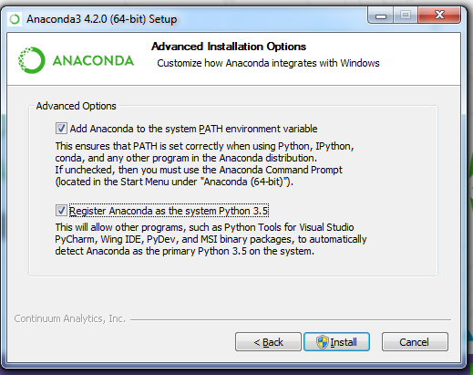
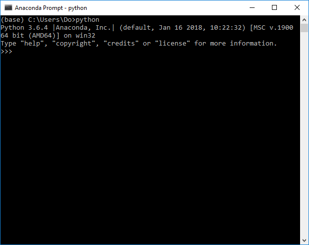
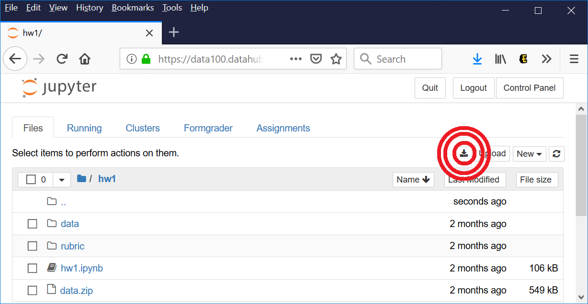
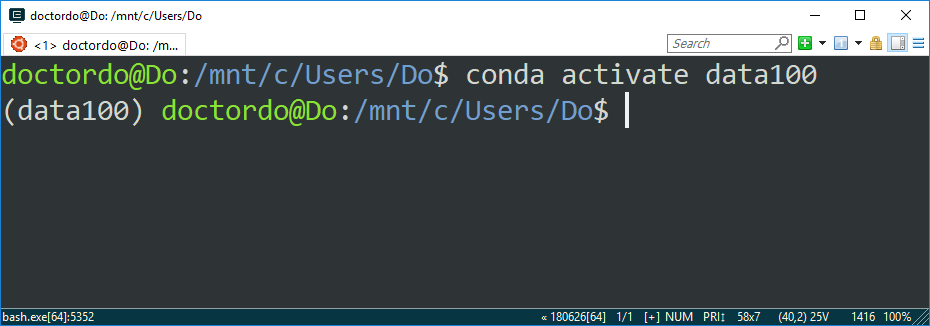
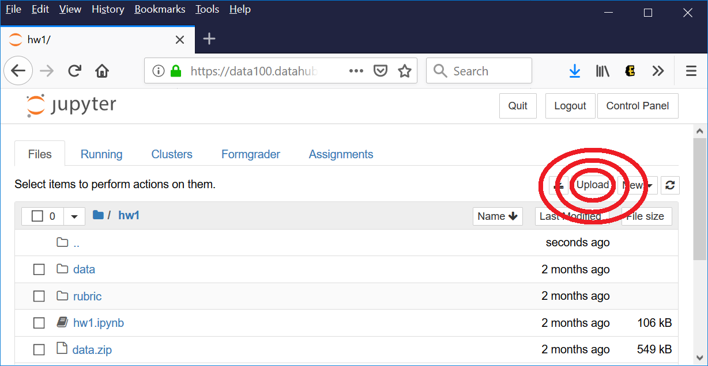
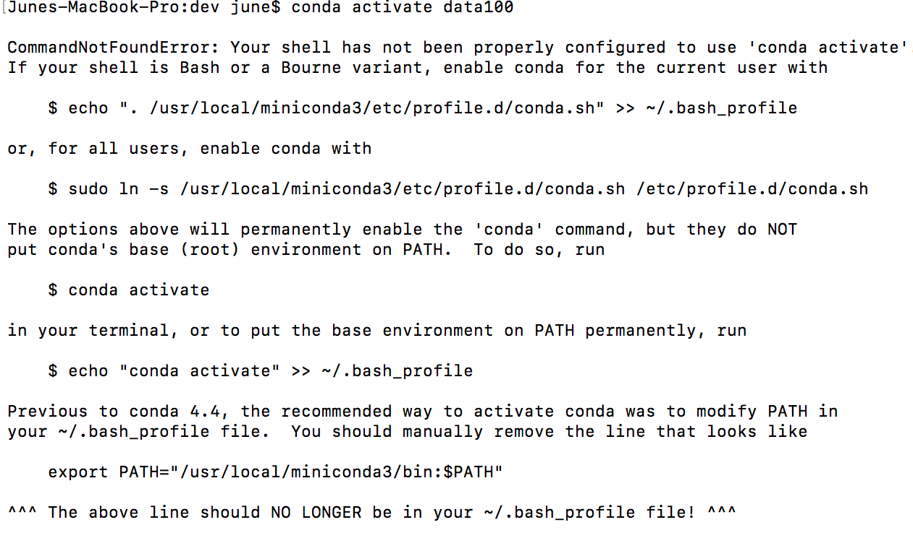

Local Setup
We will still be using datahub as our primary computing environment. This page serves as a guide for alternative environment setup.
In other words: you don’t have to follow these instructions unless you’d like an alternative to datahub.
Contents
- Installing conda by OS
- Creating your environment
- Working on assignments locally
- Opening notebooks locally
- Verifying your environment
- Removing the environment to start over
- Submitting your work
- FAQ
OSX
-
You will need access to the command line. On a Mac, you can open the Terminal by opening Spotlight (Cmd + Space) and typing
"Terminal". Alternatively, you can go to yourApplicationsscreen and selectTerminal(it might be in the folder named"Other") -
Homebrew is a package manager for OSX. If you haven’t already, install it by running the following in the command line (copy, paste, and enter):
# This downloads the Ruby code of the installation script and runs it /usr/bin/ruby -e "$(curl -fsSL https://raw.githubusercontent.com/Homebrew/install/master/install)"Verify your installation by making sure
brew --versiondoesn’t error at your terminal. -
Download and install Anaconda:
# Uses curl to download the installation script curl https://repo.continuum.io/miniconda/Miniconda2-4.5.11-MacOSX-x86_64.sh > miniconda.sh # Run the miniconda installer (you will need to enter your password) bash miniconda.sh -
Close and restart your terminal.
Ensure the installation worked by running
conda --version.
You may remove the miniconda.sh script now if you’d like.
Click here to continue to the next part of the setup.
Windows
Windows is especially prone to error if you aren’t careful about your configuration. If you’ve already had Anaconda or git installed and can’t get the other to work, try uninstalling everything and starting from scratch.
Installing Anaconda:
-
Visit the Anaconda website and download the installer for Python 3.7. Download the 64-bit installer if your computer is 64-bit (most likely), the 32-bit installer if not. See this FAQ if you are unsure.
-
Run the exe file to install Anaconda. Leave all the options as default (install for all users, in the default location). Make sure both of these checkboxes are checked:

1) Verify that the installation is working by starting the Anaconda Prompt (you should be able to start it from the Start Menu) and typing python:

Notice how the python prompt shows that it is running from Anaconda. Now you have conda installed!
From now on, when we talk about the “Terminal” or “Command Prompt”, we are referring to the Anaconda Prompt that you just installed.
Click here to continue to the next part of the setup.
Linux
These instructions assume you have apt-get (Ubuntu and Debian). For other distributions of Linux, substitute the appropriate package manager.
-
Your terminal program allows you to type commands to control your computer. On Linux, you can open the Terminal by going to the Applications menu and clicking “Terminal”.
-
Install
wget. This is a command-line tool that lets you download files / webpages at the command line.sudo apt-get install wget -
Download the Anaconda installation script:
wget -O install_anaconda.sh https://repo.continuum.io/miniconda/Miniconda2-4.5.11-Linux-x86_64.sh
4) Install Anaconda:
bash install_anaconda.sh
5) Close and restart your terminal.
Ensure the installation worked by running `conda --version`.
You may remove the install_anaconda.sh script now if you’d like.
Click here to continue to the next part of the setup.
Creating your environment
These instructions are the same for OSX, Windows, and Linux.
-
Download the data100
data100_environment.yml] from the course repository here or:# download via curl curl https://raw.githubusercontent.com/DS-100/su20/gh-pages/resources/assets/local_setup/data100_environment.yml > data100_environment.yml # OR download via wget wget -O data100_environment.yml https://raw.githubusercontent.com/DS-100/su20/gh-pages/resources/assets/local_setup/data100_environment.yml
This YAML file is what we use to specify the dependencies and packages (and their versions) we wish to install into the conda environment we will make for this class. The purpose of the environment is to ensure that everyone in the course is using the same package versions for every assignment whether or not they are working on datahub. This is to prevent inconsistent behavior due to differences in package versions.
-
Using the Terminal, navigate to the directory where you downloaded
data100_environment.yml. Run these commands to create a new conda environment. Each conda environment maintains its own package versions, allowing us to switch between package versions easily. For example, this class uses Python 3, but you might have another that uses Python 2. With a conda environment, you can switch between those at will.# sanity check on conda installation. Should be 4.5 or higher conda --version # update conda just in case it's out of date # enter y if prompted to proceed conda update conda # download git conda install -c anaconda git # Create a python 3.6 conda environment with the full set # of packages specified in environment.yml (jupyter, numpy, pandas, ...) conda env create -f data100_environment.yml # Switch to the data100 environment conda activate data100 # Check if packages are in the environment # This should not be empty! conda list
From now on, you can switch to the data100 env with conda activate data100, and switch back to the default env with conda deactivate.
Working on assignments locally
These instructions are the same for OSX, Windows, and Linux.
To work on assignments, you should fetch the assignment on datahub, navigate to the assignment folder and click on the download icon on the top right:

Then you can unzip the files into a folder of your choosing.
Remember the location of your assignment files because you’ll need to navigate to that folder to open the notebook.
Opening notebooks locally
To open Jupyter notebooks, you’ll navigate to parent directory of the assignment in your terminal, activate the environment, and start up a jupyter server. This will look something like:
cd path/to/assignment/directory
conda activate data100
jupyter notebook
This will automatically open the notebook interface in your browser. You can then browse to a notebook and open it.
Make sure to always work in the data100 conda environment when you are using jupyter notebooks for this class. This ensures you have all the necessary packages required for the notebook to run.
Verifying Your Environment
You can tell if you are correct environment if your terminal looks something like:

Additionally,
conda env list
outputs a list of all your conda environments, and data100 should appear with a * next to it (the active one).
Removing the environment to start over
If you feel as if you’ve messed up and need to start over, you can remove the environment with
conda remove --name data100 --all
To verify that the environment was removed, in your Terminal window or an Anaconda Prompt, run:
conda info --envs
Which should then no longer display the data100 environment.
Submitting your work
Submissions will still be handled via datahub. To upload your work, navigate to the appropriate assignment folder on datahub and click on the upload button on the top right. Remember to validate, submit, and upload to Gradescope (for homeworks and projects).

FAQ
Shell not properly configured to use conda activate
If you had an older version of Anaconda installed (perhaps for another class), you may see the following message.

Follow the instructions in the prompt to:
- Enable conda for all users
sudo ln -s ... - Put the base environment on PATH
echo "conda activate" >> ~/.bash_profile". Note that~/.bash_profilemay be something different like~/.bashrc. - Manually remove the line that looks like
export PATH="/usr/local/miniconda3/bin:$PATH"from your.bash_profile. Use your favorite plaintext editor to do this (do not use a rich text editor like Microsoft Word!).